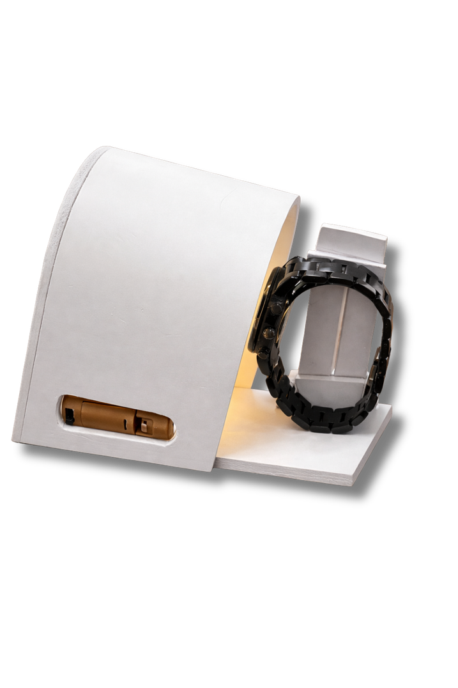
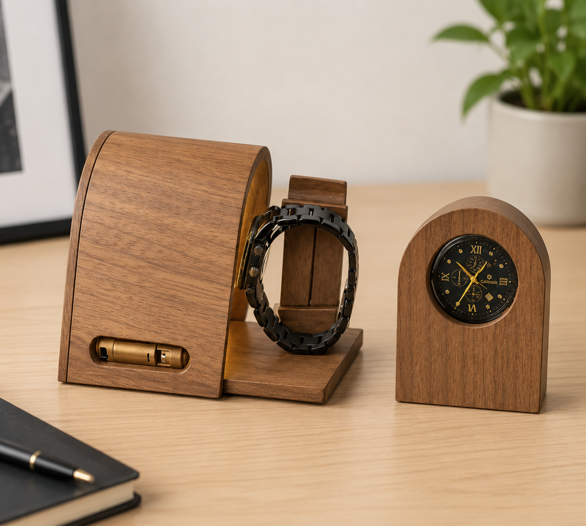
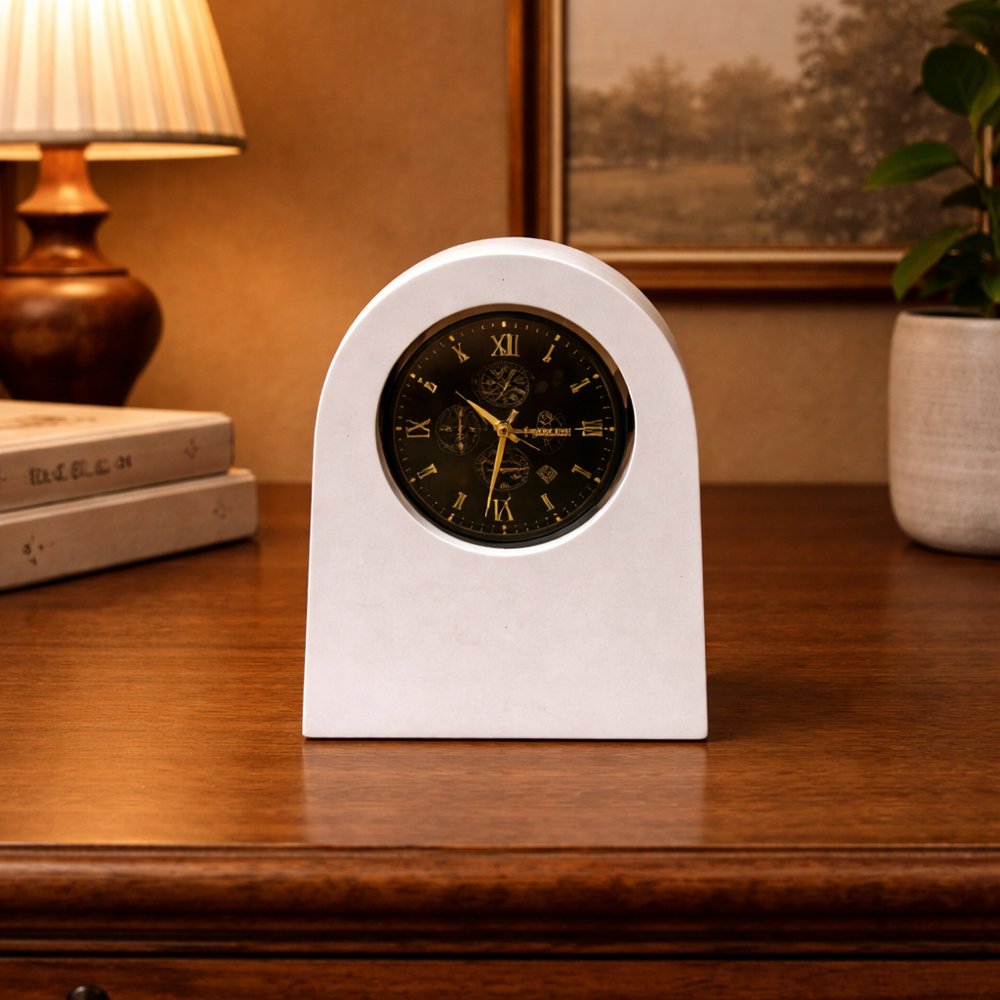
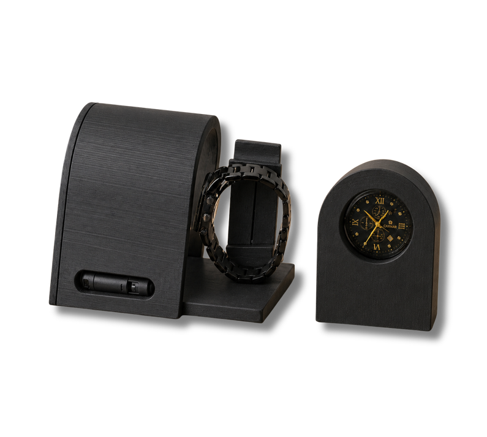
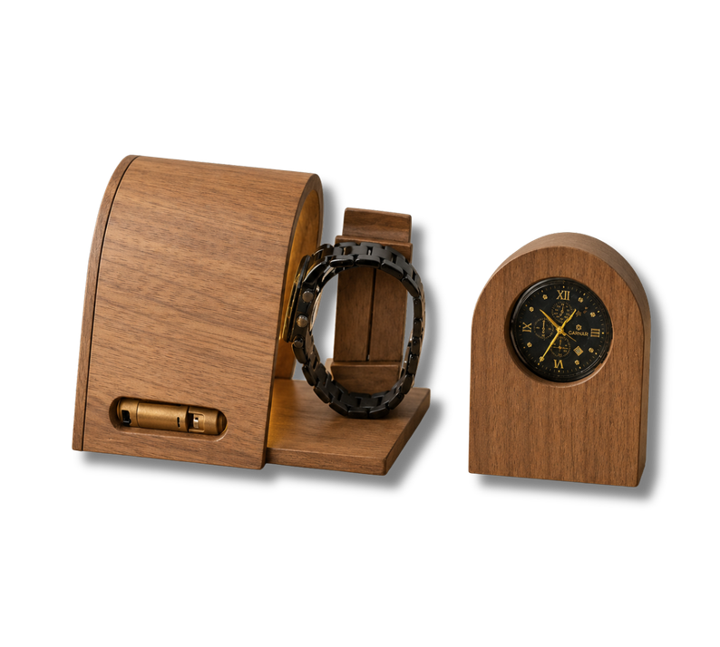
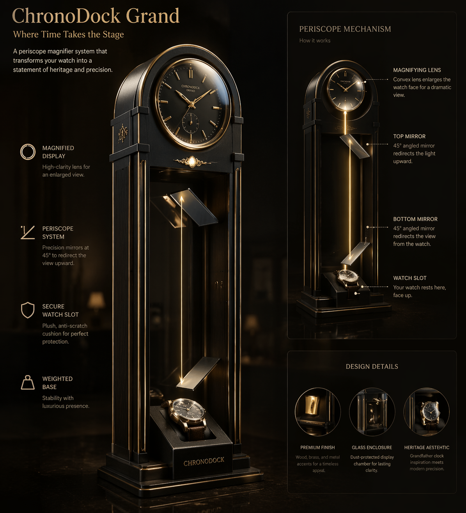

Natural posture
Supports straps and bracelets in their natural curve without scratching the clasp.
A compact dock that keeps your watch close, protected and on display.

A dedicated place for the watch you reach for every morning.

Supports straps and bracelets in their natural curve without scratching the clasp.
No bulky lids or boxes to unlatch. Set it down and pick it up in one motion.

Frames the dial like a miniature desk clock when it is not on your wrist.

The everyday essential in matte resin.

Hand-finished walnut with brass accents.

A periscope statement piece for collectors.
CNC-finished walnut body with a 65 mm optical chamber and warm grazing light.
Three quiet details turn a wristwatch into a desk timepiece.
Holds leather straps and metal bracelets in their natural loop.
Frames and magnifies the dial up to 3× for across-the-room reading.
Cordless grazing illumination activated by a recessed side switch.
An optical periscope system that projects your resting watch from a glass chamber to an eye-level convex display lens.
Plush anti-scratch slot inside a dust-protected glass chamber.
Precision top and bottom mirrors redirect the dial reflection upward.
Enlarges the watch face at clock height above a weighted dark-wood base.
Created by industrial designers Arjun Addanki and Manasi C Mohan to replace cluttered desk habits with a single, considered object.
Designed for 36–44 mm analog watches, chronographs and smartwatches on leather straps or metal bracelets.
A self-contained replaceable battery powers the warm LED via the side switch—no desk cables needed.
Your ChronoDock unit, pre-installed battery and care guide inside a foam-lined rigid box.
Reserving holds your unit from our initial 25-unit batch with zero upfront payment until dispatch.